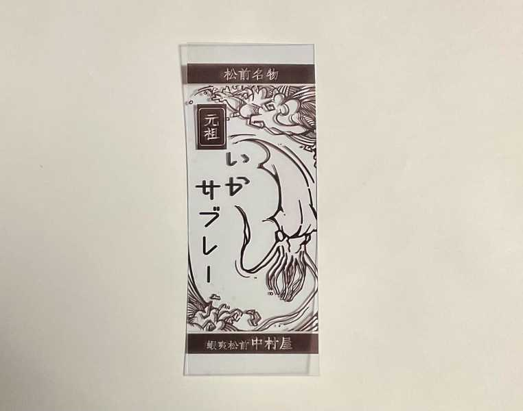
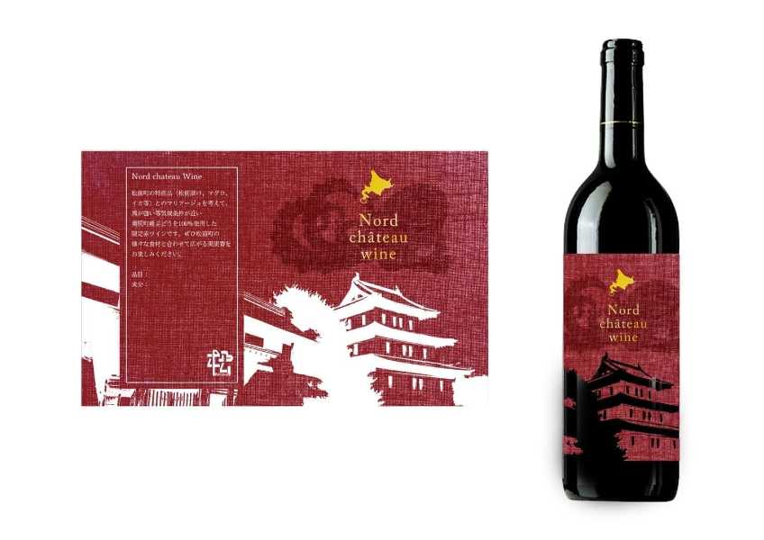

サーキュラープロジェクト
かわせみの班のテーマは子供用傘「チルドレラ」
傘を頻繁に壊しやすい子供のために、壊れた部分のみを直して再利用できる傘を考えた
ビニール傘廃棄問題も解決できないか考え、実際にアイカサさんにお話を伺い活動した。
サーキュラーデザインに基づいた製品の案を考え、プロトタイピングを行い、
提案することでサーキュラーの意義を体現した
素材として使ったのは不要になったジップロックとペットボトルキャップ・傘の骨組みだ
パラ大学祭
パラスポーツの日常化を目標に
車いすバスケやブラインドサッカーを始め、オリジナルスポーツを自分らで考え対決した。
オンラインミーティングでは他大学の人から刺激をもらいつつ意見交換を行い成長することができた。
当日は競技だけでなく、東大盆踊りサークルによる踊りも会場の全員で盛り上がった。
この活動を通じて、障害は隔たりではなく知らないことにあるのだと理解した。
東大盆踊りサークルによるおジャ魔女どれみ音頭
- 実施日2022年9月20日
- 提供：公式Instagram
松前プロジェクト
他大学の学生と松前町の商品をプロダクトデザインし、松前市観光協会および企業様に提供した。
オンラインミーティングを主に話し合いを重ね、現地のフィールドワークを経て中間発表を行った。
発表後は松前ロゴを「高級感をかんじるもの」に統一し各々でデザイン・原稿制作を行い
1月24日に最終発表で企業様に提案をし、2023年4月に正式に認められた。
この活動で、プロダクトデザインの本質やペルソナ設定など様々なことを学ぶことができた
短い期間で形にできて本当に良かった…


提案したロゴ・パッケージたちの例

YOXOフェス
テキストが入ります。テキストが入ります。テキストが入ります。テキストが入ります。テキストが入ります。テキストが入ります。テキストが入ります。テキストが入ります。テキストが入ります。テキストが入ります。テキストが入ります。テキストが入ります。テキストが入ります。テキストが入ります。テキストが入ります。テキストが入ります。テキストが入ります。テキストが入ります。テキストが入ります。テキストが入ります。テキストが入ります。テキストが入ります。テキストが入ります。テキストが入ります。テキストが入ります。テキストが入ります。テキストが入ります。テキストが入ります。テキストが入ります。テキストが入ります。テキストが入ります。テキストが入ります。テキストが入ります。テキストが入ります。テキストが入ります。
珈琲えんぴつ
テキストが入ります。テキストが入ります。テキストが入ります。テキストが入ります。テキストが入ります。テキストが入ります。テキストが入ります。テキストが入ります。テキストが入ります。テキストが入ります。テキストが入ります。テキストが入ります。テキストが入ります。テキストが入ります。テキストが入ります。テキストが入ります。テキストが入ります。テキストが入ります。テキストが入ります。テキストが入ります。テキストが入ります。テキストが入ります。テキストが入ります。テキストが入ります。テキストが入ります。テキストが入ります。テキストが入ります。テキストが入ります。テキストが入ります。テキストが入ります。テキストが入ります。テキストが入ります。テキストが入ります。テキストが入ります。テキストが入ります。